Publications
For an up-to-date list, see Google Scholar. Lab members are underlined; * indicates corresponding author.
2026
-
Commun. Mater. 7, 206 (2026)
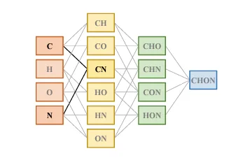
npj Comput. Mater. 12, 18 (2026)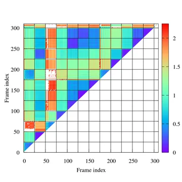
J. Chem. Inf. Model. 66, 182–193 (2026)
2025
-
J. Chem. Theory Comput. 21, 9853–9867 (2025)
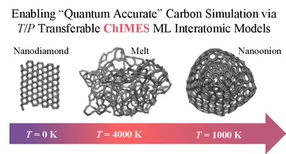
npj Comput. Mater. 11, 26 (2025)
2024
-
J. Phys. Chem. C 128, 18651–18657 (2024)
-
J. Phys. Chem. B 128, 6422–6433 (2024)
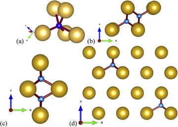
J. Chem. Phys. 160, 094117 (2024)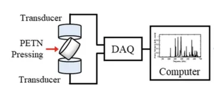
J. Appl. Phys. 135, 035103 (2024)
2023
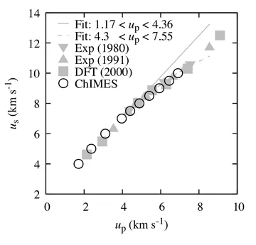
J. Chem. Phys. 159, 084502 (2023) · Editor’s Pick; JCP Emerging Investigators Special Collection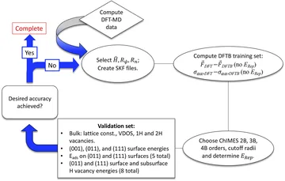
J. Chem. Phys. 158, 144112 (2023)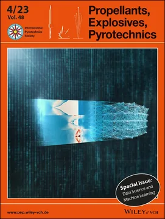
Propellants Explos. Pyrotech. 48, e202380431 (2023) · Special issue guest editors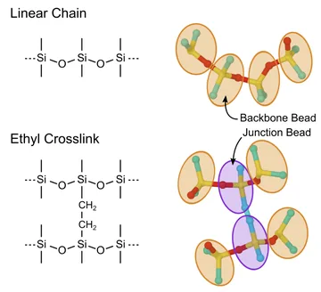
Phys. Chem. Chem. Phys. 25, 9669–9684 (2023)
2022
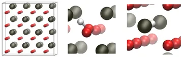
Appl. Sci. 12, 11005 (2022)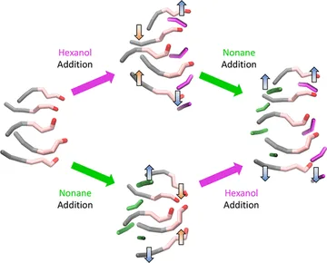
J. Phys. Chem. B 126, 3940–3949 (2022)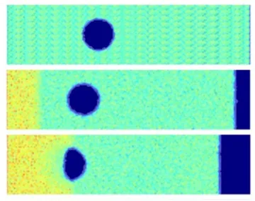
Propellants Explos. Pyrotech. 47, e202200001 (2022)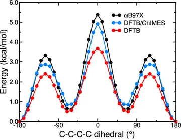
J. Phys. Chem. Lett. 13, 2934–2942 (2022)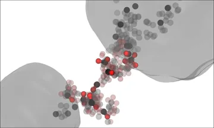
Nat. Commun. 13, 1424 (2022)
2021
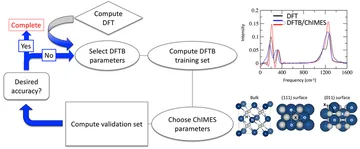
J. Chem. Theory Comput. 17, 4435–4448 (2021)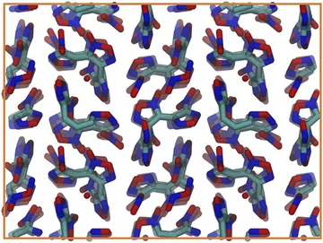
J. Chem. Phys. 154, 164115 (2021)
2020
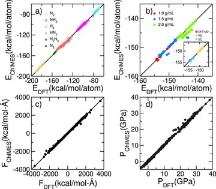
J. Chem. Phys. 153, 224102 (2020)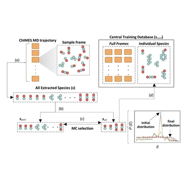
J. Chem. Phys. 153, 134117 (2020) · Special Issue: Machine Learning Meets Chemical Physics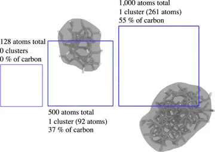
J. Chem. Phys. 153, 054103 (2020)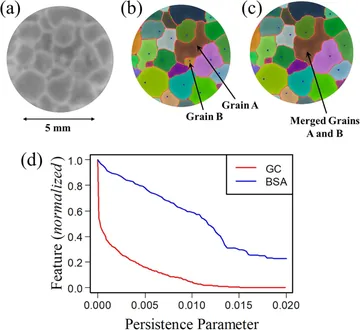
Comput. Mater. Sci. 182, 109782 (2020)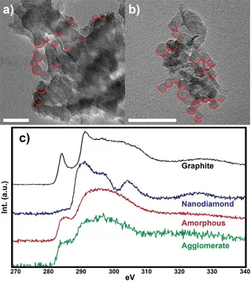
Nat. Commun. 11, 353 (2020)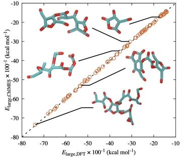
LLNL Public Technical Report (2020)
2019
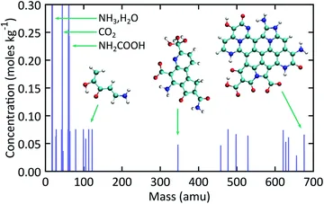
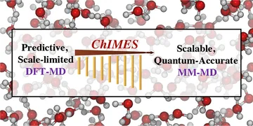
J. Chem. Theory Comput. 15, 436–447 (2019)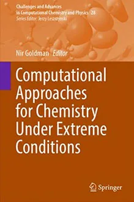
In Computational Approaches for Chemistry Under Extreme Conditions, Springer, 71–93 (2019)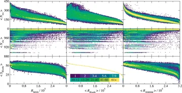
J. Chromatogr. A 1589, 47–55 (2019)
2018
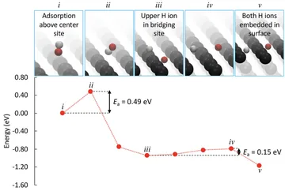
J. Chem. Theory Comput. 14, 2652–2660 (2018)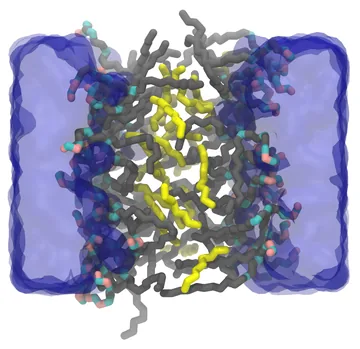
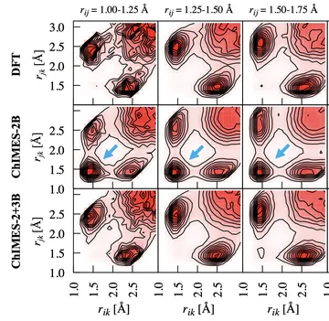
Proceedings of the 16th International Detonation Symposium (2018)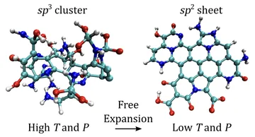
Proceedings of the 16th International Detonation Symposium (2018)
2017
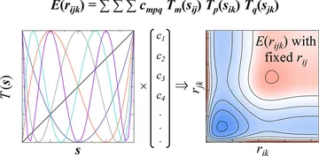
J. Chem. Theory Comput. 13, 6222–6229 (2017)
2013
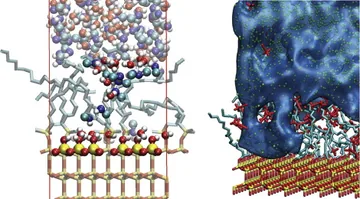
J. Chromatogr. A 1287, 60–82 (2013)